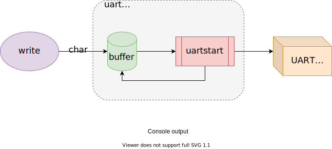

Xv6 Interrupts and device drivers
Xv6 Interrupts and device drivers
Learning: xv6-riscv-book Chapter 5 Interrupts and device drivers
Driver:
- code in an OS
- manages a particular device
- config hardware
- tells operations
- handles resulting interrupts
- interacts with processes
Devices -> driver -> interrupts (one type of trap) -> OS
xv6 handles driver’s interrupt in devintr (kernel/trap.c:117)
Common driver: two contexts:
| context | runs in | called | perform |
|---|---|---|---|
| top half | a process’s kernel thread | called via syscalls (e.g. read/write) | - ask hardware to start an operation - waits for operation to complete |
| bottom half | excutes at interrupt time | device completes the operation => raise an interrupt | as interrupt handler: - what operation has completed? - wakes up a waitting proc - tells hw to do next operation |
Console input
console.c: console driver: a simple illustration of driver structure.
- accepts typed chars via UART hardware
- accumulates a line
- processing sepcial input chars (e.g.
^Hfor backspace,^Dfor End-of-Transmission) - user processes use
readto fetch inputed lines.
QEMU:
- keystrokes -> QEMU’s simulated UART hardware
UART:
(QEMU hardware): emulated 16550 chip connected to keyboard and display.
(appears to software): a set of memory-mapped control register. (kernel/uart.c)
LSR: wheter input chars are waiting to be readRHR: chars to read (FIFO, if empty -> LSR.ready = 0)- …
initialize:
consoleinit(kernel/console.c:182)- generate receive interrupts when the UART receive bytes from input
- generate transmit complete interrupts when finished sending a byte of output
processes (e.g. shell):
- [process] read from console (via file descriptor) ->
- [kernel]
consoleread-> - [consoleread] waits input (
sleepto wait user typing) to arrivecons.buf, copies input to user space until\n-> - [kernel/consoleread] returns to user process
User types a character:
- UART hardware ask RISC-V to raise an interrupt
- activates xv6’s trap handler
- handler calls
devintr devintrlooksscause: discover interrupt is from a devicedevintrask PLIC hardware to tell which device interrupted- if it was UART: calls
uartintr uartintrreads input chars from UART hw- hands chars to
consoleintr consoleintr: accumulate input chars incons.bufuntil a whole line arrives- treats special chars (e.g. backspace)
- when a newline arrives:
consoleintrwakes up a waitingconsoleread
Console output
writeto a fie descriptor connected to console ->uartputcuartputcputs each char into an output buffer (uart_tx_buf), callsuartstart- if buffer full ->
uartputcwaits uartstart: if device ready -> transmitting- UART finishes sending a byte -> generates an interrupt
- interrupt ->
uartintr->uartstart

Concurrency in drivers
I/O concurrency:
- the decoupling of device activity from process activity via buffering and interrupts.
- console driver can process input even when no process is waiting to read it
- processes can send output without having to wait for the device
Concurrency dangers:
- two processes on different CPUs call
consolereadat the same time.- solve: acquire a lock
- one process waits for input, interrupt of the input arrive when a different process is running.
- interrupt handlers copy input data to a buffer
- wake up top-half code to do the rest (consoleintr -> consoleread)
Timer interrupts
Clock hardware:
- attached to each RISC-V CPU
- xv6 programs this clock hw to interrupt each CPU periodically
Timer interrupt:
clock hardware -> timer interrupt -(trap)-> usertrap / kerneltrap -> yield -> switch processes
RISC-V timer interrupts: can only be taken in MACHINE MODE, not supervisor mode:
- xv6 handles timer interrupts separately from the trap mechanism.
- before main ->
start.c->timerinit: sets up to receive timer interrupts in machine mode- program the CLINT hardware (core-local interruptor) to generate an interrupt after a delay
- set up a scratch area (like trapframe): help the time interrupt handler save registers and address of CLINT
- enables timer interrupt:
mtvec <- timervec
- timer interrupt (
timervec: machine mode) -> handler: raise a software interrupt and return -> delivers softwate interrupt (devintr) with ordinary trap mechanism
- before main ->
EOF
1 | # By CDFMLR 2021-03-30 |
顶部图片来自于小歪API，系随机选取的图片，仅用于检测屏幕显示的机械、光电性能，与文章的任何内容及观点无关，也并不代表本人局部或全部同意、支持或者反对其中的任何内容及观点。如有侵权，联系删除。